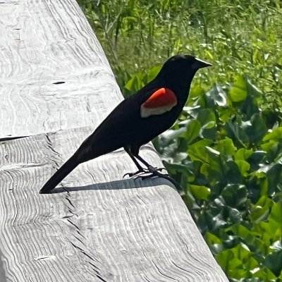

山田リョウ⛩️
@Yamada_Ryoooo
这听不出来是ai的可以把自己加进去了

zhang haitao
@autumnredleaf
1980年審判四人幫，12月24日最後庭審階段
江青在法庭發言，“我的一點看法”，兩個鐘頭，其中七次被打斷，有部分最後沒公佈與衆
其中，她説到：毛主席早就對我説過，要警惕劉少奇鄧小平陸定一楊尚昆以及周揚田漢和廖沫沙等人的翻案活動
他們肯定是要翻案的
這是一條客觀規律，不以人們意志為轉移 https://t.co/JqMj3erS1s